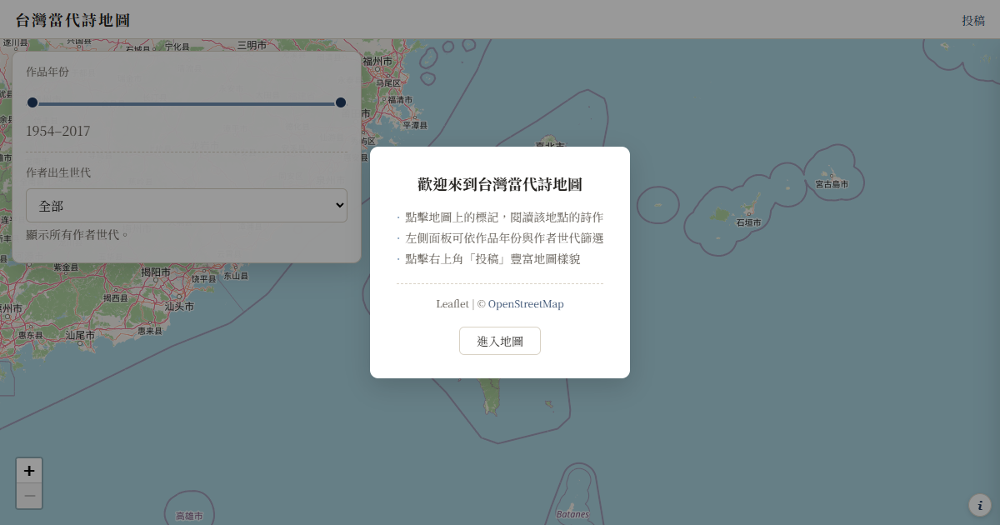
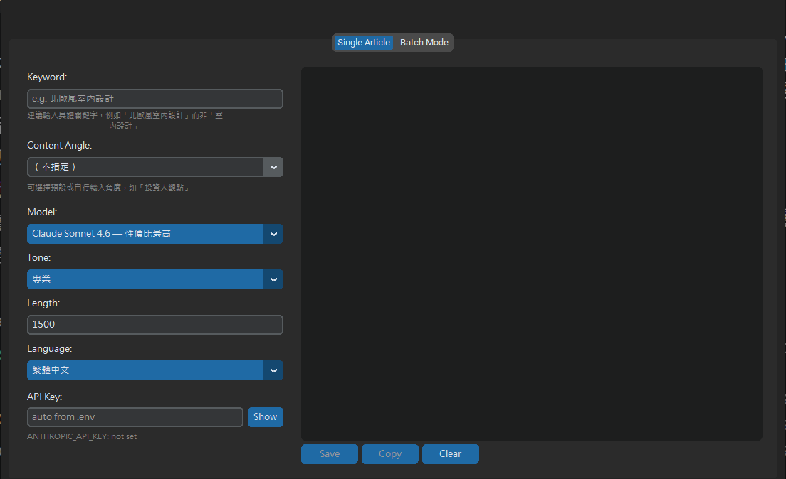
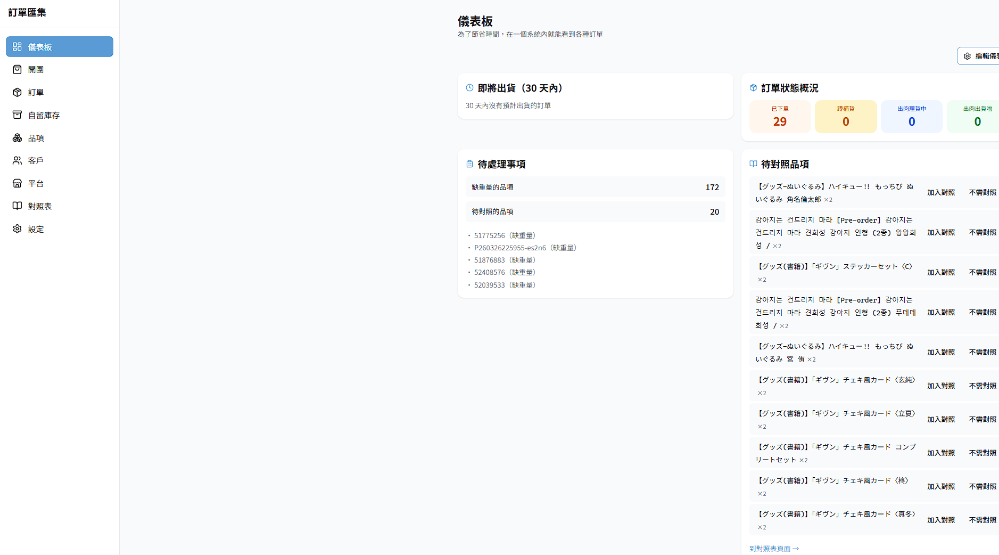

以下是我用 AI 從 0 打造、能實際運作的專案——橫跨內容、SEO 與全端開發。不是課程作業，是為了解決真實問題而做出來、且真的有人在用的東西。

把台灣當代詩作標記在地圖上的閱讀專案：以 Leaflet 呈現，支援作品年份與作者世代篩選，並有投稿與後台審核流程（Firebase Firestore）。從中文系的當代詩背景長出來的個人作品，也是我少數把「文學」與「技術」接在一起的嘗試。
開啟網站 ↗
把自己的 SEO／GEO 內容方法做成桌面工具：支援 16 種 AI 模型（Claude／GPT／Gemini／Grok／DeepSeek／Perplexity），輸入種子關鍵字即自動展開三維意圖矩陣（主體 × 動作 × 狀態）、一次批次生成多篇，輸出含 YAML front matter、FAQ 與 FAQPage JSON-LD 的結構化文章。已發布 v1.0–v1.2、freemium 授權、打包為可下載的 .exe。
已發布 3 個版本 · 桌面工具（原始碼私有）
為代購業者打造的營運後台：整合 8 個購物平台的訂單解析、3 組 Gmail 每日自動抓信、公開喊單頁、跨團對帳與多種 Excel 匯出、LINE／Email 通知。Next.js 16 + Supabase，全表 RLS 資安、Sentry 個資過濾、138 項自動化測試——一個非工程背景的行銷人，靠 AI 把複雜業務需求變成能上線營運的系統。
實際營運中 · 需登入 · 後台畫面已去識別